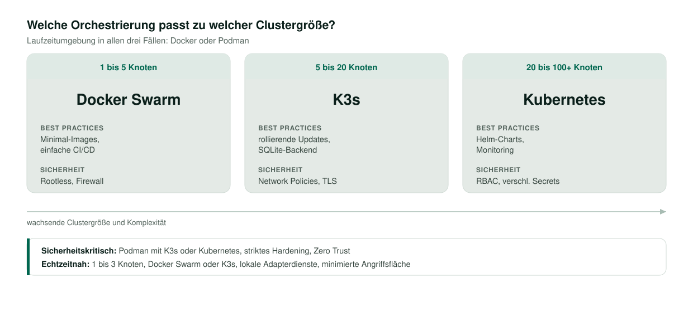
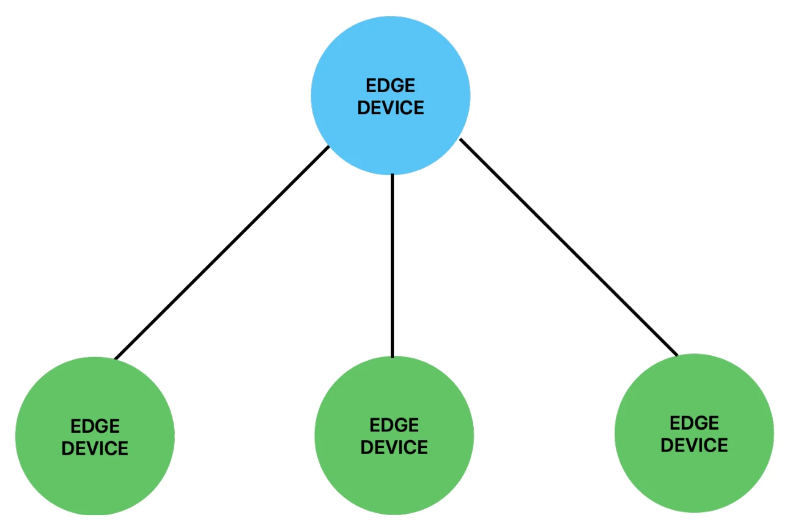

Herausforderung & Problemstellung
Die fortschreitende Digitalisierung industrieller Produktionsprozesse erfordert eine engere Verzahnung von Produktionsmitteln und IT-Systemen. Die dabei entstehenden Datenvolumina wachsen kontinuierlich, und ihre Verarbeitung in Echtzeit stellt Anforderungen an Latenzminimierung, Bandbreiteneffizienz und Systemverfügbarkeit. Zentrale, cloudbasierte Architekturen zeigen in diesem Umfeld deutliche Grenzen, insbesondere dort, wo die unmittelbare Reaktionsfähigkeit auf Produktionsereignisse oder prädiktive Wartungserfordernisse über den Erfolg entscheidet.
Edge-Computing verlagert die Verarbeitung an die Datenquelle, etwa auf Industrie-Gateways oder ressourcenbeschränkte Einplatinensysteme. Als technologische Basis dienen containerisierte Lösungen, deren leichtgewichtige Virtualisierung einen effizienten Betrieb auch auf schwacher Hardware erlaubt; Orchestrierungssysteme verwalten die verteilten Container automatisiert. Sicherheitsmechanismen wie der Betrieb ohne Root-Rechte und Selbstheilungsfunktionen sind dabei keine Zusatzfunktionen, sondern zentrale Komponenten, weil Betriebsunterbrechungen in industriellen Umgebungen erhebliche Kosten verursachen und Produktionsdaten besonders schützenswert sind.
Die Praxis zeigt drei wiederkehrende Anwendungsfälle: die Anlagenüberwachung, bei der Vibrations- und Temperaturdaten lokal vorverarbeitet und aggregiert werden; die Ausführung von Machine-Learning-Modellen unmittelbar am Produktionsstandort; und Edge-Gateways, die proprietäre Protokolle in standardisierte IoT-Protokolle übersetzen. In allen drei Fällen erlaubt eine containerisierte Architektur, einzelne Dienste zu aktualisieren oder zu ergänzen, ohne den laufenden Betrieb zu unterbrechen.
Quelle: Kyr (2025), Kapitel 1 und 4Zielsetzung & Vorgehen
Die Arbeit analysiert containerbasierte Plattformen und Orchestrierungssysteme auf Basis einer systematischen Literaturrecherche. Untersucht wurden vier Achsen:
- Skalierbarkeit und Leistung: wie containerisierte Anwendungen auf Edge-Geräten mit unterschiedlicher Hardwareausstattung arbeiten, wo bei der Skalierung Grenzen auftreten und wie sich Latenz und Durchsatz bewerten lassen.
- Sicherheitskonzepte: welchen Beitrag Mechanismen wie der Betrieb ohne Root-Rechte und verschlüsselte Kommunikation zu Stabilität und Ressourceneffizienz leisten.
- Energie- und Ressourcenoptimierung: wie sich der Verbrauch in ressourcenbeschränkten Umgebungen senken lässt, insbesondere mit Blick auf den Überbau der Orchestrierungssysteme und die bedarfsgerechte Skalierung von Diensten.
- Best Practices: welche Kombination aus Technologien und Vorgehensweisen sich für welches Szenario eignet.
Neben quantitativen Faktoren wie Latenz- und Durchsatzwerten flossen qualitative Merkmale in die Bewertung ein, etwa der Wartungsaufwand und die Integrationsfähigkeit in vorhandene OT-Protokolle. Auf dieser Grundlage entstand ein Kriterienkatalog, aus dem sich am Ende ein Anforderungskatalog für künftige Umsetzungen ableitet.
Quelle: Kyr (2025), Kapitel 4.2 und 5Technologievergleich
Fünf Technologien wurden entlang von fünf Kriterien gegenübergestellt. Die Analyse zeigt, dass keine davon universell für alle Edge-Szenarien geeignet ist: Die Wahl hängt an Hardwareausstattung, Clustergröße und Integrationsanforderungen.
| Kriterium | Docker | Podman | Kubernetes | K3s | Docker Swarm |
|---|---|---|---|---|---|
| Leistung | weit verbreitet, Daemon-Überbau | daemonlos, ressourcenschonend | hoch skalierbar, komplex | leichtgewichtige Kubernetes-Variante | schlank, aber eingeschränkt |
| Sicherheit | Rootless ab neueren Versionen, großes Ökosystem an Werkzeugen | nativ rootless, kleinere Angriffsfläche | Network Policies, RBAC, Secrets, starke Isolierung | Basisumfang von Kubernetes, etwas reduziert | Grundfunktionen, einfache TLS-Konfiguration |
| Ressourcenbedarf | mittel, abhängig von Daemon und Containeranzahl | niedriger, kein Daemon, kleinerer Speicherbedarf | hoch, viele Komponenten und Master-Überbau | deutlich geringer als Kubernetes | gering, einfacher Aufbau |
| Wartung | große Community, reichhaltige Dokumentation | weniger verbreitet, primär Kommandozeile, gute Systemd-Integration | hohe Funktionalität, erfordert tieferes DevOps-Wissen | einfaches Setup, Upgrades leichter als bei vollem Kubernetes | simpel zu verwalten, geringerer Funktionsumfang |
| Integration | umfangreiches Ökosystem, viele Erweiterungen | weitgehend Docker-kompatibel, gute Interoperabilität | Helm-Charts, Service-Discovery, Add-ons | Kubernetes-kompatibel, kleineres Ökosystem | einfach, Compose-Syntax auch für Swarm nutzbar |
Unabhängig von der Technologieauswahl legt die Literatur nahe, dass konsistente Update- und Patch-Strategien, regelmäßiges Prüfen der Container-Images auf Schwachstellen sowie der Betrieb ohne Root-Rechte den größten Beitrag zu Sicherheit und Stabilität leisten.
Quelle: Kyr (2025), Tabelle 1 und Kapitel 8.5Empfehlung nach Szenario
Aus der Analyse leitet sich eine Zuordnung ab, die für typische Edge-Szenarien die passende Kombination aus Laufzeitumgebung, Orchestrierung und Sicherheitsmaßnahmen benennt. Den Ausschlag gibt dabei die Clustergröße: Bis zu fünf Knoten genügt eine schlanke Lösung, ab etwa zwanzig Knoten lohnt der volle Funktionsumfang, und dazwischen liegt die reduzierte Variante.

Praktische Erprobung
Der Schwerpunkt der Arbeit liegt auf der theoretischen Analyse. Ergänzend wurde eine explorative Praxisphase durchgeführt, um die alltägliche Handhabung der Werkzeuge und mögliche Hürden einzuschätzen. Ein groß angelegter Hardwaretest war ausdrücklich nicht vorgesehen.
Docker erwies sich dabei als unkompliziert in Installation und Bedienung; mit Docker Swarm entstand ein kleines Cluster aus wenigen Diensten. Podman ließ sich in einer Testumgebung einrichten und startete Container zuverlässig, wobei der Betrieb ohne Root-Rechte auf ein geringeres Risiko hindeutet. Die Versuche mit Kubernetes und K3s scheiterten dagegen an Kompatibilitätsproblemen der verwendeten Apple-Silicon-Hardware. Da kein alternativer Gerätepool zur Verfügung stand und diese Fragen nicht zum Kern der Arbeit gehörten, wurde dieser Zweig nicht weiterverfolgt; für künftige Projekte empfiehlt sich x86-Hardware oder eine ARM-kompatible Distribution.
Prototypischer Aufbau
Für den Prototyp wurde die Shopfloor-Ebene durch mehrere untergeordnete Edge-Geräte simuliert, auf denen Sensordaten erfasst, aggregiert und bereitgestellt werden. Diese Daten gehen an ein übergeordnetes Edge-Gerät, das als zentrale Stelle für die weitere Verarbeitung und die Überwachung dient.

Auf jedem Gerät erzeugten Python-Dienste zyklische und statische Messwerte, um verschiedene Szenarien einer industriellen Umgebung nachzubilden. Für die Übertragung kamen zunächst MQTT und UDP zum Einsatz; MQTT zeigte sich als leicht zu implementieren und in IIoT-Projekten gut dokumentiert. Ergänzend wurden WebSockets für die bidirektionale Kommunikation zu einem möglichen Dashboard erprobt. Apache Kafka für eine ereignisgetriebene Verarbeitung wurde diskutiert, aber im Rahmen des Prototyps nicht umgesetzt. Bei den Datenformaten stand JSON wegen seiner schemalosen Flexibilität zur Verfügung, während FlatBuffers und Protocol Buffers auf ihr Leistungsverhalten hin betrachtet wurden.
Leistungstests und Skalierungsmessungen waren nicht Teil dieser Phase. Für einen breiteren produktiven Einsatz wären gezielte Messungen zu Performanz, Latenz und Ressourcennutzung nötig, um die optimale Kombination aus Orchestrierung, Protokollen und Datenformaten zu bestimmen.
Quelle: Kyr (2025), Kapitel 9Anforderungskatalog
Den Abschluss der Arbeit bildet ein Katalog von Anforderungen, der die theoretischen Erkenntnisse in überprüfbare Vorgaben überführt und als Leitfaden für künftige Umsetzungen dient. Er unterscheidet funktionale, nicht-funktionale und sicherheitsbezogene Anforderungen und kennzeichnet einzelne davon als Ausschlusskriterium. Die tragenden Punkte:
- Die Edge-Geräte müssen Sensor- und Steuerungsdaten über ein standardisiertes Industrieprotokoll wie OPC UA oder MQTT empfangen und den nachgelagerten Diensten bereitstellen. Der Knoten übernimmt damit die Vermittlung, eine direkte Kommunikation mit Steuerung und Sensorik kann entfallen.
- Netzwerkunterbrechungen müssen erkannt werden, und die Verbindung ist selbsttätig wieder aufzubauen, damit ein Ausfall nicht zu längeren Dienstunterbrechungen führt.
- Die Laufzeitumgebung muss so sparsam sein, dass ein Gerät mit 512 MB Arbeitsspeicher oder weniger nutzbar bleibt. Bei derart begrenzter Hardware kommen eine daemonlose Laufzeit oder eine reduzierte Kubernetes-Variante in Frage statt einer vollen Installation.
- Jedes Gerät muss einen lokalen Datenpuffer einrichten können, um Messwerte bei Ausfall der Anbindung zwischenzuspeichern, bis die Verbindung wieder steht.
- Container-Images sind regelmäßig auf bekannte Schwachstellen zu prüfen, eingebettet in einen sicherheitsbewussten Entwicklungs- und Auslieferungsprozess.
- Die Kommunikation zwischen Edge-Geräten und übergeordneten Diensten muss verschlüsselt erfolgen. Unverschlüsselter Datenverkehr gilt als unzulässig, weil Edge-Geräte häufig ungeschützt und über öffentliche Netze angebunden sind. Dieser Punkt ist als Ausschlusskriterium eingestuft.
- Eine rollenbasierte Zugriffskontrolle steuert, wer auf Geräte und Bereitstellungen zugreifen darf, unterschieden nach Rollen wie Betrieb, Administration und Einsicht.
Ergebnis & Mehrwert
Das Ergebnis ist ein strukturiertes Architekturkonzept mit konkreten Handlungsempfehlungen. Es zeigt, dass Docker durch seine Verbreitung und Dokumentation oft als Standard gilt, der Daemon-Überbau bei knappem Arbeitsspeicher aber zum Engpass wird. Podman ist die ressourcenschonende, daemonlose Alternative mit nativer Unterstützung für den Betrieb ohne Root-Rechte und empfiehlt sich überall dort, wo Sicherheit und geringer Verbrauch im Vordergrund stehen. Kubernetes bietet den größten Funktionsumfang, wirkt in kleinteiligen Edge-Netzen wegen seines Ressourcenbedarfs jedoch überdimensioniert; K3s ist die reduzierte Variante für genau diesen Fall, und Docker Swarm bleibt die schlanke Lösung für kleine Cluster, stößt aber bei komplexen Netzwerk- und Sicherheitsanforderungen an Grenzen.
Der praktische Nutzen liegt in der Entscheidungshilfe: Unternehmen können anhand von Clustergröße, Sicherheitsniveau und verfügbarer Hardware die passende Kombination auswählen, statt sich an einer einzelnen Technologie zu orientieren. Der Anforderungskatalog macht diese Auswahl überprüfbar und liefert die Vorgaben, an denen sich eine spätere Umsetzung messen lassen muss.
Quelle: Kyr (2025), Kapitel 11.1Ausblick
Ein bedarfsgerechtes Edge-System muss stets auf den konkreten Anwendungsfall zugeschnitten werden, weil Überbau, Sicherheitsfunktionen und Komplexität je nach Technologie deutlich variieren. Eine ganzheitliche Betrachtung, die neben Performanz und Latenz auch Energieeffizienz und Langzeitverhalten im industriellen Maßstab einbezieht, ist bislang nur in Ansätzen vorhanden. Erforderlich sind daher Evaluierungen in umfangreichen verteilten Installationen mit Hunderten von Geräten, die auch betriebswirtschaftliche Faktoren wie Wartungsaufwand, Schulungsbedarf und Kosten berücksichtigen.
Für viele Unternehmen wäre zudem eine vertiefte Integration proprietärer Feldbus-Protokolle von Bedeutung, da in zahlreichen Anlagen weiterhin ältere Steuerungssysteme im Einsatz sind. Offen bleibt außerdem die Weiterentwicklung der Container- und Orchestrierungstechnologien in Richtung automatisierter Sicherheitstests und widerstandsfähiger Netzstrukturen, um einheitliche Sicherheitsstandards über das gesamte Spektrum von der Edge bis zur Cloud zu etablieren.
Quelle: Kyr (2025), Kapitel 11.2 und 11.3Quellen
Kyr, P. (2025). Analyse und Definition von Anforderungen für ein dezentrales Edge-Computing-System unter Verwendung von Docker, Kubernetes und alternativen Technologien [Abschlussdokumentation, Masterklassenprojekt Industrie 4.0]. Fachhochschule St. Pölten, Department Medien und Digitale Technologien.
Die Abbildung und die Tabellen dieser Seite stammen aus der genannten Abschlussdokumentation und tragen deren Nummerierung.
Zurück zu den Projekten